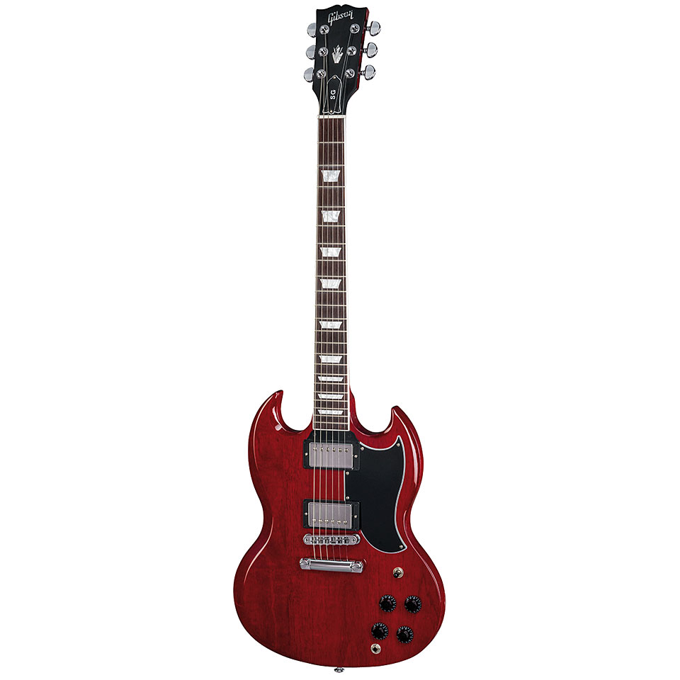
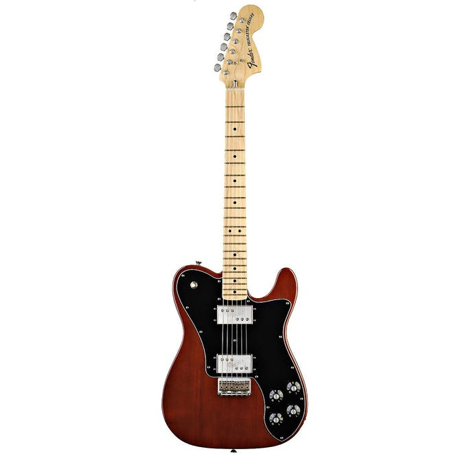

My Favorite Guitars

|
Fender American Special StratEasily recognizable by its large headstock, the fender american special stratocaster is in the affordable range for those who want the larger headstock |
|  |
Gibson Les Paul SGPopularized by iconic AC/DC front-man, Angus Young, the Gibson SG puts out enough crunch to irritate your neighbors. Its cutaway body makes it ideal for solos, giving rockers a wide range of fretboard to work with. |
|  |
Fender '72 Deluxe TelecasterOne of my favorite looking guitars. The '72 deluxe comes with the fatter headstock, which I love. Hardware is styled antique, to give it that classic '72 look. |